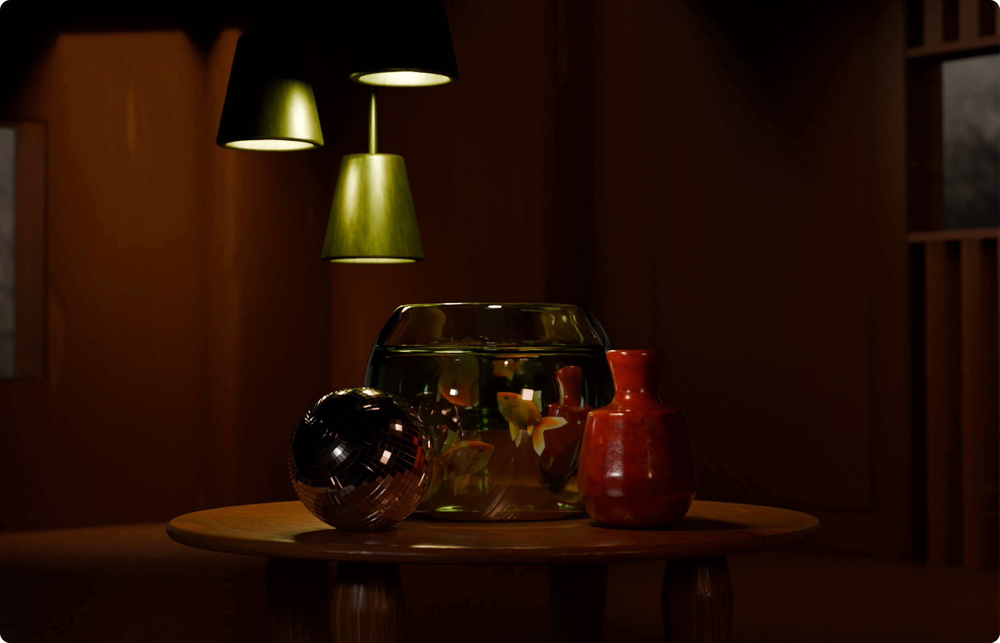
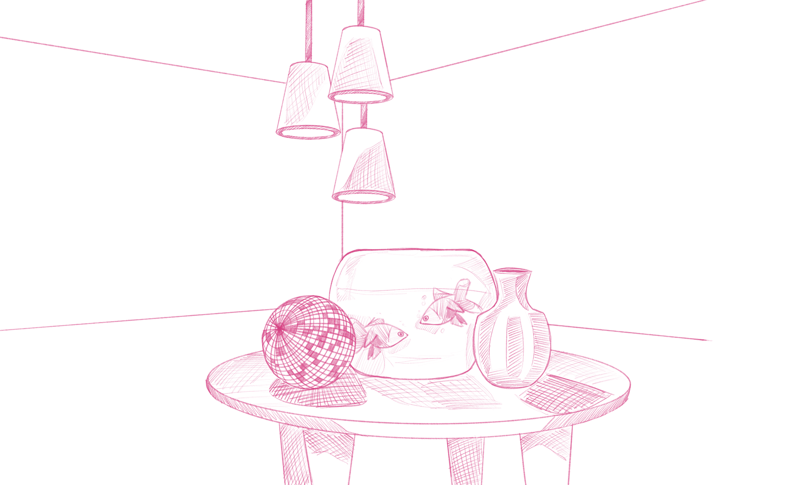
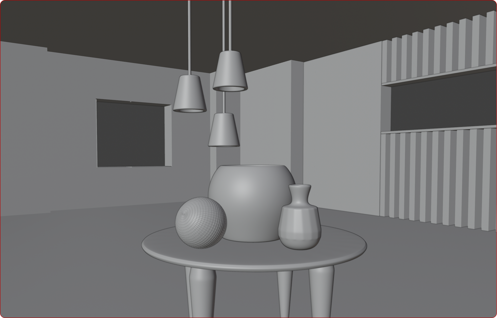
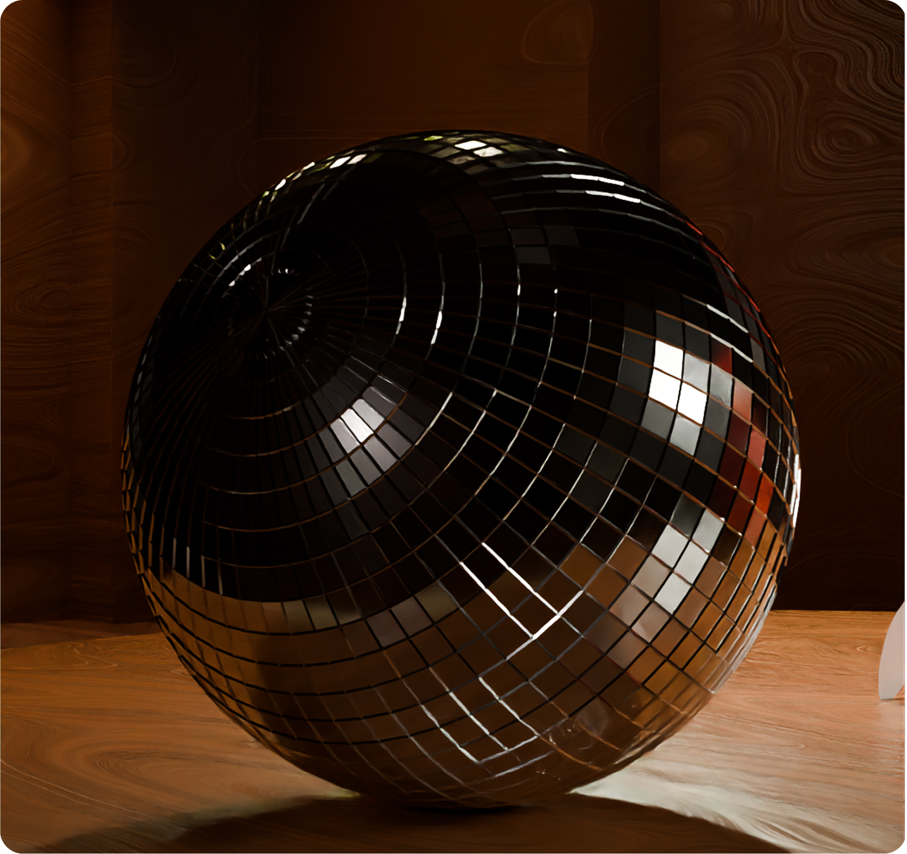
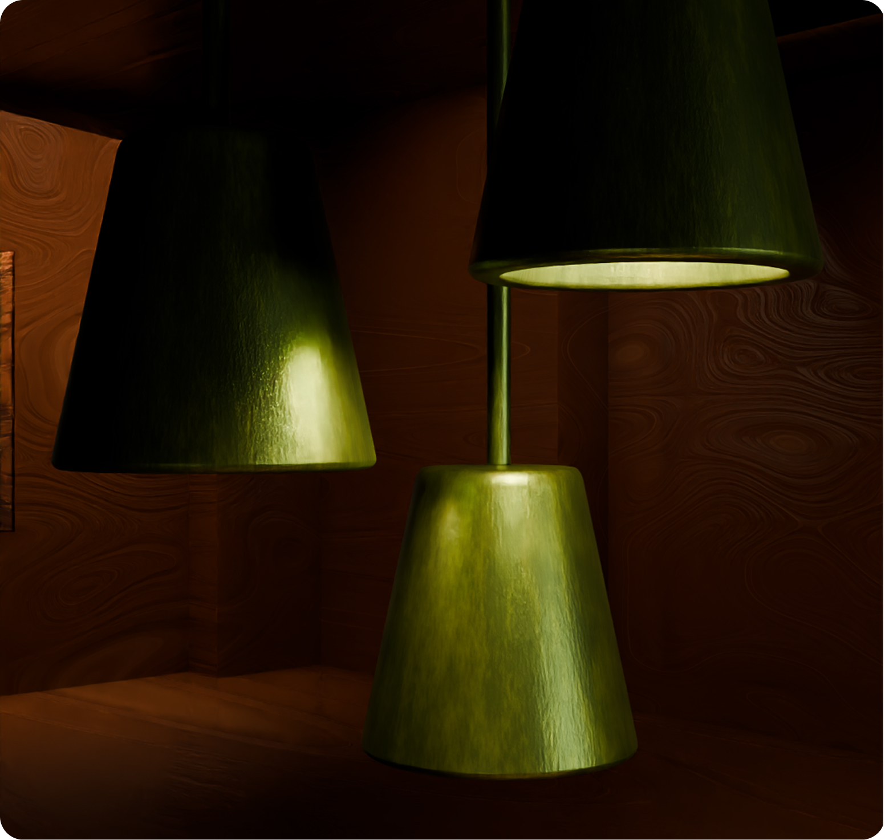
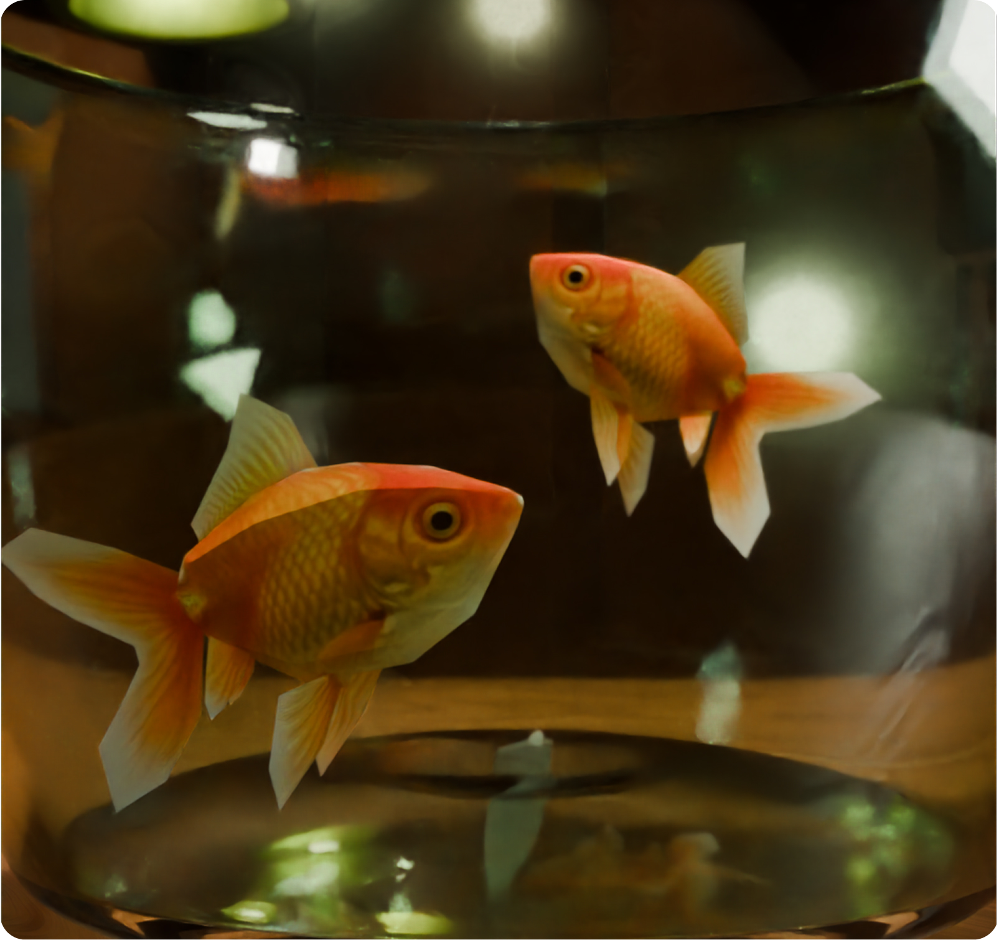
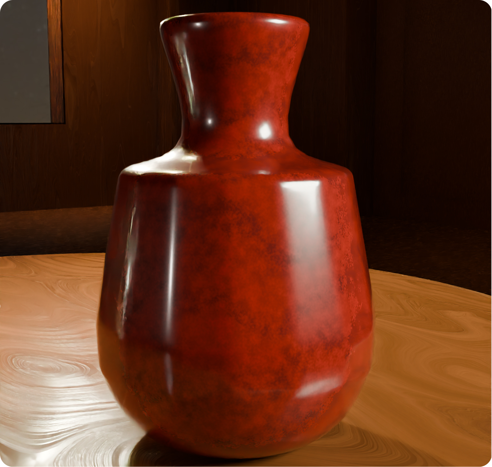
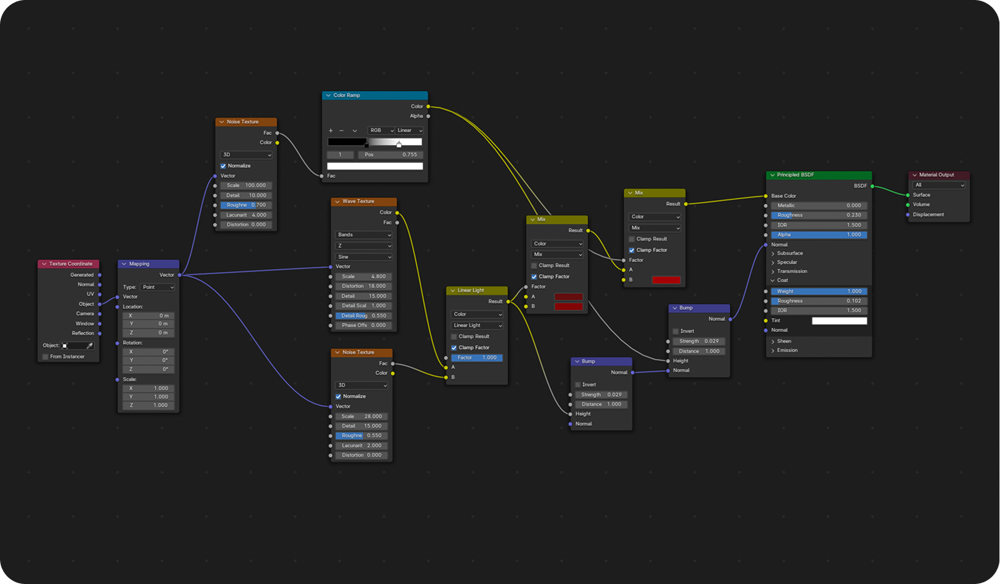
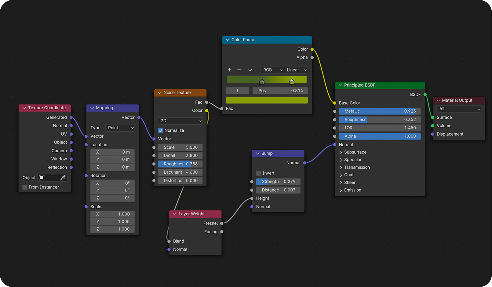
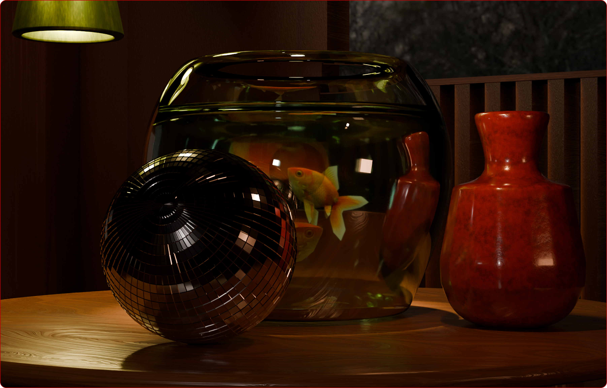

Aquarium Szene
Eine visuelle Explorationsstudie über räumliche Tiefe, Lichtbrechung und alltägliche Ästhetik im virtuellen Raum.
Diese 3D-Still-Life-Szenografie stellt das Zusammenspiel von Licht, Glas-Materialien und organischer Formgebung in den Mittelpunkt der Komposition. Umgeben von minimalistischen Designobjekten dient das zentrale Aquarium als Brennpunkt der Szene. Es reflektiert und bricht die warmen Lichtkegel der hängenden Leuchten sowie die kühlen Einfälle des Umgebungslichts physikalisch korrekt.
Ziel der Arbeit war es, eine beruhigende, atmosphärische Raumstimmung zu schaffen, die die Grenzen zwischen digitaler Render-Präzision und klassischer Stillleben-Malerei fließend überschreitet.
Szene

Prozess
Konzeption & Ideenskizze
Die visuelle Entwicklung des Projekts begann mit einer gezielten Layout-Skizze. Ziel dieser ersten Konzeptionsphase war es, die räumliche Anordnung der Hauptakteure: das zentrale Aquarium, die flankierende Keramikvase und die glänzende Metallkugel, harmonisch aufeinander abzustimmen, bevor die Modellierung in Blender erfolgte.

In der Skizze wurden gestalterische Entscheidungen vorab festgelegt:
Fokus & Blickführung: Die Platzierung des runden Aquariums als zentraler Fluchtpunkt der Komposition.
Balance & Kontraste: Das Wechselspiel zwischen organischen, weichen Formen (Glas und Vasen) und der harten, geometrischen Oberfläche der Kugel.
Lichtführung: Die grobe Ausrichtung der hängenden Spotlights, um bereits im Vorentwurf die spätere Lichtbrechung (Caustics) und Schattenbildung zu planen.







Procedural Texture Stacking: Durch die Kombination und Überlagerung mehrerer prozeduraler Textur-Nodes (Musgrave, Wave und Noise) wird eine hochdetaillierte, organische Oberflächenstruktur ohne externe Bildtexturen erzeugt.
Dynamic Bump & Roughness Mapping: Die generierten Rauschmuster werden über ColorRamps und Bump-Nodespräzise auf den Roughness- sowie Normal-Eingang des Principled BSDF geleitet, um realistisch gebrochenes Licht und feine Oberflächenunebenheiten zu simulieren.
Fresnel & Layer-Weight Integration: Die Einbindung einer Layer Weight (Fresnel)-Node steuert den Material-Glanz winkelabhängig, was besonders bei metallischen und gläsernen Reflexionen für physikalisch korrekte Kantenaufhellung sorgt.
Targeted Surface Micro-Bumping: Über ein skaliertes Noise-Muster und eine fein eingestellte Bump-Node (Strength: 0.279) erhält die Oberfläche feine Mikro-Substrukturen, die dem Render-Ergebnis haptische Tiefe verleihen.
